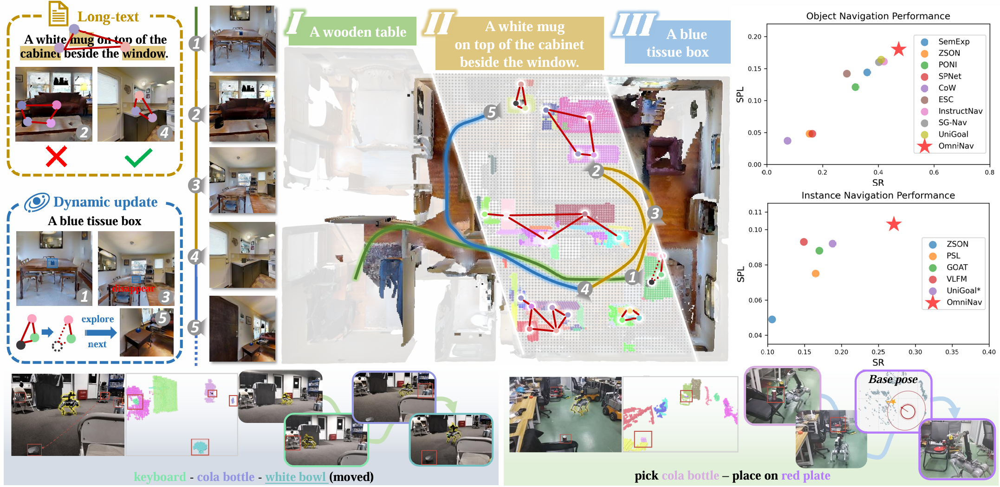
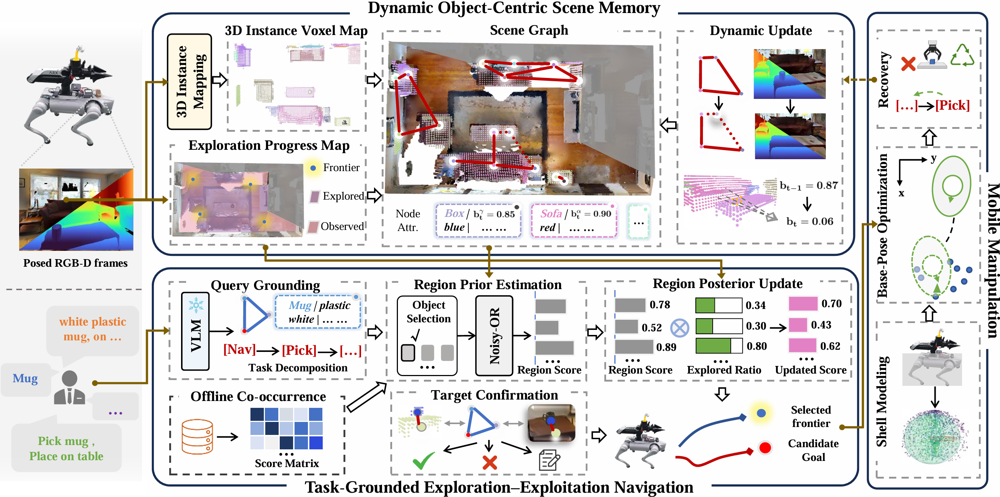
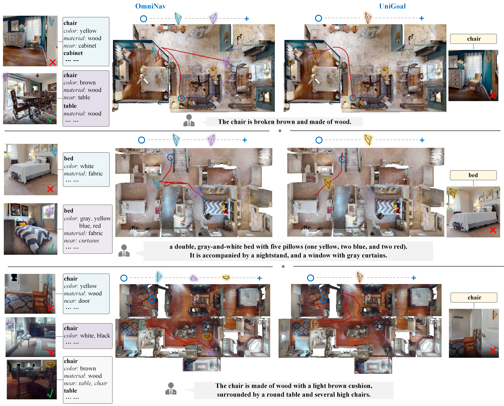

Add result
Semantic ObjectNav success rate / SPL
Robust Long-Horizon Target Navigation in Dynamic Environments

Overview
Long-horizon target navigation requires a robot to sustain task execution across evolving observations, decisions, and physical interactions. This requires three coupled capabilities: maintaining valid scene memory, revising target beliefs under partial observability, and selecting interaction-feasible navigation endpoints. However, the state underlying each capability is only conditionally valid: scene representations become stale when objects move or disappear, unsuccessful searches alter beliefs over target locations, and geometrically convenient endpoints may still be infeasible for manipulation. To address these challenges, we present OmniNav, which formulates long-horizon navigation as continual inference over a factorized task state posterior coupling scene validity, target belief, and interaction feasibility. For representation, OmniNav incrementally constructs an updatable 3D object scene memory, preventing stale scene evidence from propagating to subsequent decisions. For exploration, it introduces an evidence-aware Bayesian belief-revision mechanism that derives dependency-aware region priors from semantic context, incorporates unsuccessful searches as negative evidence, and updates them for posterior-guided frontier selection. For interaction, OmniNav incorporates manipulation reachability and collision constraints into navigation-endpoint selection and propagates execution feedback through hierarchical closed-loop recovery. Extensive experiments demonstrate that OmniNav achieves the highest success rates among the compared methods on semantic ObjectNav and fine-grained instance navigation benchmarks, remains robust to target relocation, and improves real-world pick-and-place success from 53.3% to 71.7% over an adapted open-loop baseline.
Method
Continual inference connects scene validity, target belief, and interaction feasibility across a long-horizon task.
Overall framework of OmniNav. The system consists of three main modules: (i) a dynamic object-centric scene memory that maintains instance-level semantics, geometry, relations, posterior persistence beliefs, and an auxiliary 2D exploration-progress map; (ii) a task-grounded exploration–exploitation navigation strategy that balances semantic target reasoning with exploration progress evidence; and (iii) a reachability-aware closed-loop mobile manipulation module that selects interaction-feasible base poses and recovers from execution failures or scene changes.

Add result
Semantic ObjectNav success rate / SPL
Add result
Fine-grained instance navigation success rate
53.3% → 71.7%
Real-world pick-and-place success over the adapted open-loop baseline
Simulation
An overview figure presents the query, candidate observations, and selected target instance.

Real world
Standard navigation-to-interaction demonstrations with reachability-aware endpoint selection.
The target is moved after it has been observed.
Stress tests with small target displacement.
Don't recognize the red plate, and fail the subtask of "place on red plate".